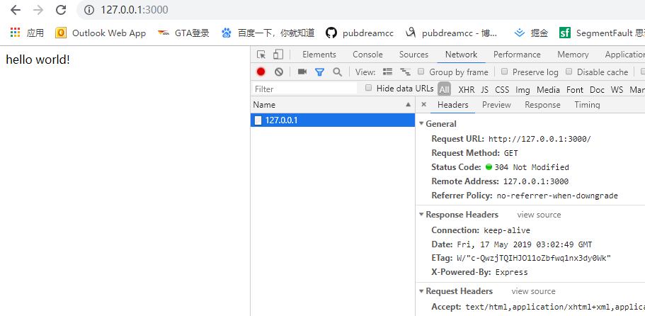
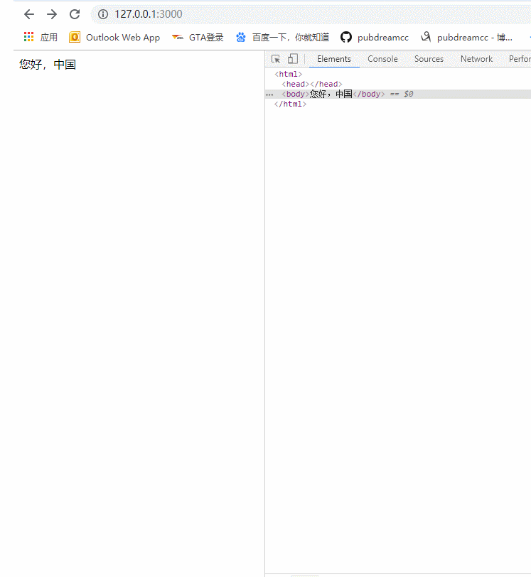
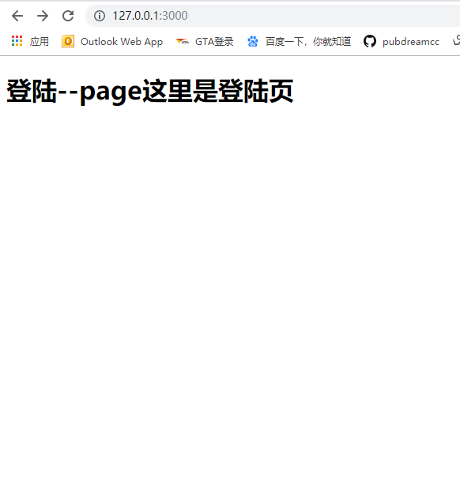
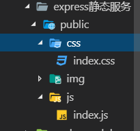
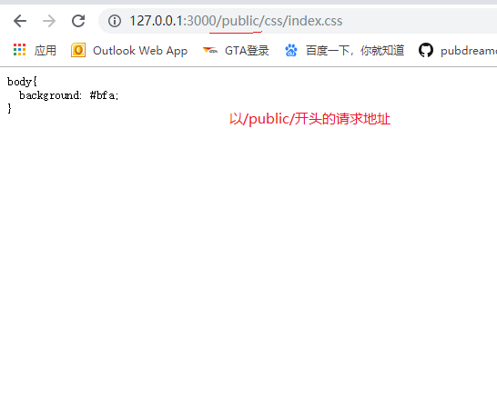
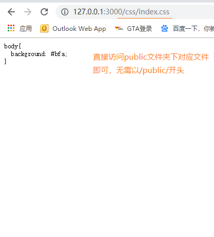
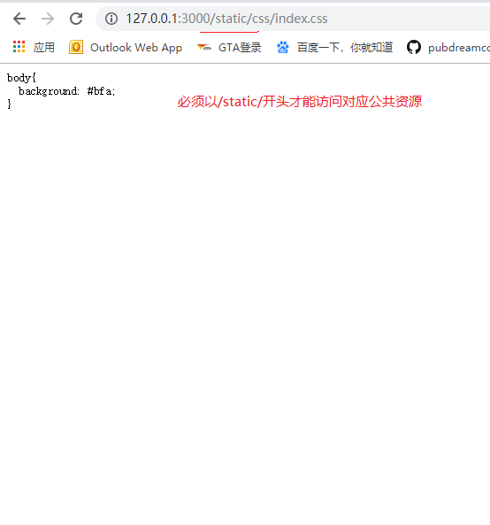

Express框架是一款简洁而灵活的node.js web应用框架。前面我们自己手动创建服务器在Express中就是一个API的事情，这就使得我们更加注重业务的功能和开发效率上，不必纠结过多底层的事情。
Express中文官网：Express
安装：npm install express --save
项目中引入：
const express = require('express')
// 得到server（服务器）实例
const app = express()
// 绑定服务器接受请求事件，并且添加处理回调函数
app.get('/', (req, res) => res.send('Hello World!'))
// 绑定服务端口，启动服务器
app.listen(3000, () => console.log('Example app listening on port 3000!'))node app.js
利用express框架可以减少我们的代码量，比起之前使用node核心模块http构建服务器代码排版更直观。express底层使用的就是http核心模块的API。如果要处理客户端不同请求路径，我们可以往下罗列多个app.get()方法，无需再使用if...else...来判断。express也不用我们设置响应头的Content-Type和中文编码格式，会底层自动识别添加，可以看下面代码：
const express = require('express')
const app = express()
app.get('/', (req, res) => {
res.send('您好，中国')
})
app.get('/login', (req, res) => {
res.send('<h1>登录</h1>')
})
app.get('/register', (req, res) => {
res.send('<h1>注册</h1>')
})
app.listen('3000', () => {
console.log('running...')
})
前面的学习我们已经知道如何在Node.js中使用art-template模板引擎，同样在express中也可以使用art-template。
npm install --save art-template
npm install --save express-art-template注意：这里的express-art-template依赖了art-template模块，所以必须连同art-template模板一起安装下来。
express，配置express-art-template模板引擎let express = require('express')
// 得到服务器实例对象
let app = express()
// 配置express-art-template模板引擎，配置之后会在服务器请求事件的回调处理函数response对象中有一个render方法，用于渲染模板字符串返回渲染后的结果。
app.engine('art', require('express-art-template'))
// 为服务器绑定get请求事件，添加相应处理回调函数
app.get('/', (req, res) => {
res.render('login.art', {
title: '这里是登陆页'
})
})
// 绑定服务器监听端口号，启动服务器
app.listen(3000, () => {
console.log('running...')
})这里的app.engine('art', require('express-art-template'))为必须项，是配置模板引擎的关键所在，项目中虽然没有引入art-template模块，但是由于依赖关系，所以也必须一同下载安装。app.engine的第一个参数为解析模板字符文件的后缀名，art表示模板文件必须以.art为扩展名，可以修改为常见的.html格式。res.render()第一个参数为要解析的模板字符串文件，文件的扩展名与前面的app.engine()第一个参数一致，模板文件会默认去当前同级目录的views文件夹下查找，所以无需写文件路径，也不能写文件路径，因此，我们经常把一些与页面视图相关的文件都放在views文件夹下，这也是一种好的编程习惯。第二个参数为模板配置对象。如果需要修改res.render()默认查找模版文件的位置，比如我希望它去别的文件夹下找，不是views文件夹，可以使用下面配置语句：
app.set('views', '替换的文件路径') // 第一个参数必须为：views
在web网站后端开发的过程中，我们往往需要把一些静态文件夹暴露出去，用户可以根据url地址去访问到其中的内容，这些静态文件往往也称之为公共资源，利用express框架可以方便地托管静态文件。
本章节对应的API地址：Express 托管静态文件
public
app.use('/public/', express.static('./public'))
第一个参数指定用户必须以/public/开头的url地址才能访问到静态文件夹下的具体对应文件资源。express.static()里面传一个相对路径，指定要暴露的文件。
let express = require('express')
let app = express()
app.use('/public/', express.static('./public'))
app.listen(3000, ()=> {
console.log('running...')
})
app.use(express.static('./public'))
app.use()方法省略第一个参数，用户无需以/public/开头，可以直接以暴露文件夹下对应文件地址访问对应资源，看例子
let express = require('express')
let app = express()
app.use(express.static('./public'))
app.listen(3000, ()=> {
console.log('running...')
})
app.use('/static/', express.static('./public'))
第一个参数为我们自己指定的任意文件名，用户访问公共资源，需要以我们指定的文件名开头的url地址，看例子
let express = require('express')
let app = express()
app.use('/static/', express.static('./public'))
app.listen(3000, ()=> {
console.log('running...')
})
本篇博文出之于我的GitHub仓库node学习教程资料，如果需要demo源码的伙伴可以前往GitHub下载，欢迎小伙伴们给个star，你们的点赞是我持续更新的动力。
pubdreamcc原创之，欢迎转载！
仓库地址：Node学习教程资料